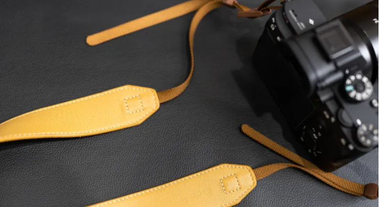

摄影装备推荐  Cam-in真皮单反微单相机背带 复古文艺索尼相机肩带挂 淘宝 ￥79 宜丽客(ELECOM) 日本offtoco影视飓风Tim同款旅行单反 京东 ￥499 马小路XT-15羽量级全尺寸专业便携三角架套装 淘宝 ￥998 闪迪(SanDisk)64GB SD存储卡U3 C10 V30 4K 至尊超 京东 ￥179 耐司(NiSi) MC UV 77mm UV镜 双面多层镀膜无暗角镜 京东 ￥105 VSGO威高cmos全面幅传感器清洁套装 中画幅清洁棒单反 京东 ￥99